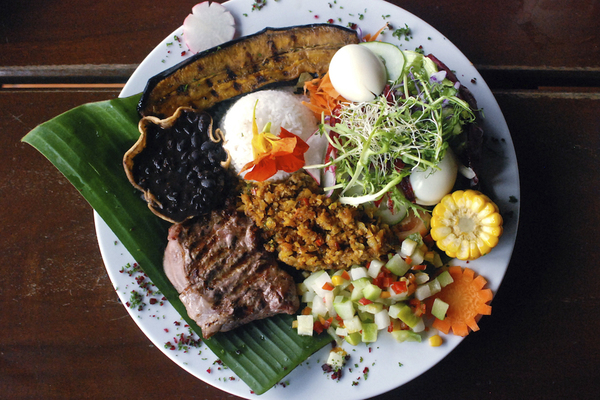

Viajes Culinarios
¡Bienvenidos a un recorrido gastronómico por tres destinos fascinantes!
Costa Rica, Colombia y Francia nos invitan a explorar sus sabores únicos y tradiciones culinarias que cautivan los sentidos. Desde la frescura tropical de la "pura vida" costarricense hasta la explosión de sabores de la cocina colombiana, y la sofisticación de la alta cocina francesa, este viaje nos sumergirá en una experiencia culinaria inolvidable.
¡Acompáñennos en este viaje culinario y descubran la magia que se encuentra en cada bocado!
Imagen del País
Costa Rica
Costa Rica es un país situado en Centroamérica, conocido por su rica biodiversidad, paisajes tropicales y playas paradisíacas.
Ingredientes Destacados
Los ingredientes destacados en la cocina costarricense incluyen arroz, frijoles, plátanos, mariscos frescos, yuca, maíz y una variedad de frutas tropicales como el mango, la piña y la papaya.
Video
Tradiciones Culinarias
La cocina costarricense se caracteriza por su simplicidad y uso de ingredientes frescos. Algunas de las tradiciones culinarias incluyen el consumo de gallo pinto (mezcla de arroz y frijoles), ceviche, casado (plato tradicional que incluye arroz, frijoles, carne, plátano y ensalada), yuca con chicharrón y olla de carne.
Imagen de los Platillos
PDF de Recetas
Restaurantes en Google Maps
Bar y Restaurante El avion
este lugar es que está construido alrededor de un avión C-123 Fairchild, que fue utilizado durante la guerra civil de Nicaragua en la década de 1980.
El restaurante ofrece una amplia variedad de platos, incluyendo mariscos frescos, platos típicos costarricenses y opciones internacionales.
Mirador Oceanview
ofrece una experiencia gastronómica excepcional con una vista impresionante de la costa del Pacífico y las puestas de sol más espectaculares.
Ofrece servicios profesionales para eventos especiales, como bodas, y se esfuerza por hacer que cada ocasión sea inolvidable.
Restaurante Nuestra Tierra
Es considerado el epítome de los restaurantes tropicales.
Ofrece un ambiente acogedor con grandes ventanas, techos altos, interiores de madera y una decoración tradicional.